OpenVerify: An Open-Source Community on Verification for Agents
TL;DR: LLM-as-a-Verifier is already being adopted across industry. Building on that momentum, we propose launching OpenVerify, an open-source community around verification for agents, anchored by a position paper on expanding the frontier of verifiability.
74% of production agent deployments still rely on human evaluation
69% → 92% verifier accuracy from newer models in 12 months
7 industry & academic adopters across 7 domains
1. Motivation
Industry adoption so far
- Adopters include NVIDIA, Thinking Machines, Databricks, Google, Lambda, Genentech, and Stanford Law School.
- Proposal: build on these adoptions to grow a broader community around verification for agents, and release a position paper to anchor it.
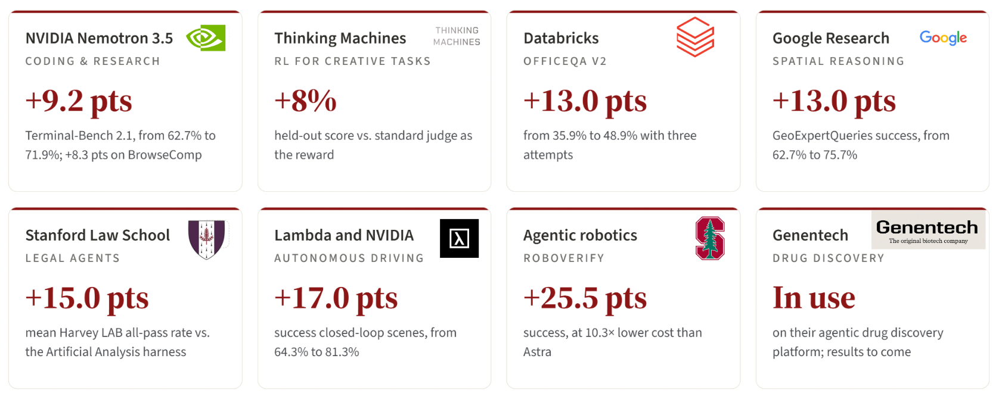
Why now: “Riemann Hypothesis solved by Anthropic?”
Today’s news on X:

- Breakthroughs like this implicitly “assume the existence of a reliable verifier.”
- The news sparked a broader discussion on X about verifiable vs. non-verifiable tasks and jagged intelligence:
- LLMs are extremely capable on verifiable tasks such as math and coding, but fail badly in many non-verifiable domains.

Examples of outputs that are hard to verify:
- A medication order
- A contract
- A lane change by an autonomous car
- A grasp by a robot
We currently have no verifier that returns a trusted score for outputs like these.
2. Thesis: Expanding the Frontier of Verifiability
We plan to write a position paper for OpenVerify, modeled after the Barbarians at the Gate paper.
Thesis: AI progress is increasingly constrained by our ability to reliably verify model outputs and agent behaviors. We argue that verification should be treated as a first-class component of AI systems, with the goal of expanding the set of tasks that can be verified reliably and efficiently.
The agenda:
- Verifiability Spectrum: Characterize tasks by the availability, cost, and reliability of ground truth, ranging from formally verifiable tasks (math and coding) to expensive or delayed verification (robotics, autonomous driving, and drug discovery) and subjective evaluation (painting and music).
- Verification Fidelity: Establish domain-appropriate metrics for measuring how closely lightweight verifiers approximate trusted reference evaluations, including objective outcomes, expert judgments, and human preferences.
- Cost–Fidelity–Latency Trade-offs: Study how verification quality changes with computational cost, evaluation latency, and access to ground truth, identifying when approximate verification can replace or complement expensive evaluations.
- Scaling Verification: Investigate how test-time compute, training data, and verifier model capability improve verification fidelity and efficiency, enabling reliable evaluation of increasingly complex tasks.
- OpenVerify Community: Establish shared benchmarks, reporting standards, open verifier models, and cross-industry case studies to systematically measure and advance the frontier of verifiability.
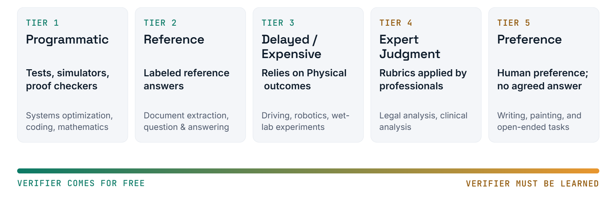
3. Evidence for the Thesis
Verification is the constraint
- Today, 74% of production deployments rely on human evaluation.
- Source: Melissa & Marquita, Measuring Agents in Production (2025).
- Plan: re-run the survey with Marquita and Melissa, report the updated number, and see whether it has held steady or shrunk.
Scaling Verification: three axes, each with a cost–fidelity–latency trade-off
(a) Test-time compute
In our LLM-as-a-Verifier paper, verification accuracy improves consistently as we scale:
- The granularity of score tokens
- The number of repeated evaluations
- The decomposition of evaluation criteria
Trade-offs: Cost · Fidelity · Latency
| Cost | Fidelity | Latency |
|---|---|---|
| ↑ Up | ↑ Up | ↑ Up |

(b) Training data (training / fine-tuning verifiers)
- With contrastive language models (CLMs), we find that the test InfoNCE loss (verification loss) L follows a power law in training compute C, dataset size D, and model parameters N.

Trade-offs: Cost · Fidelity · Latency
| Cost | Fidelity | Latency |
|---|---|---|
| ↓ Down | ↑ Up on domain-specific data; ↓ Down on generalization | ↓ Down |
(c) Verifier model capability
- Newer models are better verifiers out of the box.
- In twelve months, verification accuracy rose from 69% (Haiku) to 92% (Fable 5.2).
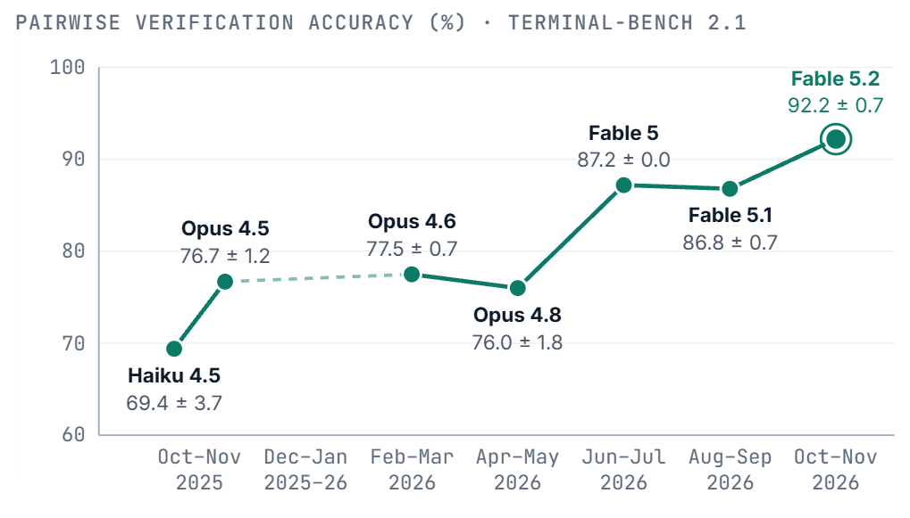
Trade-offs: Cost · Fidelity · Latency
| Cost | Fidelity | Latency |
|---|---|---|
| ↑ Up | ↑ Up | ↑ Up |
4. Industry Adoptions and Case Studies
NVIDIA — Nemotron 3.5 model release

Scaling self-verification with Nemotron 3.5 Super improves accuracy across agentic benchmarks:
| Benchmark | Before | After | Gain |
|---|---|---|---|
| Terminal-Bench 2.1 | 63% | 72% | +9 |
| DeepSWE | 25% | 35% | +10 |
| BrowseComp | 71.5% | 79.8% | +8.3 |
Thinking Machines — RL for non-verifiable tasks
- Blog post
- Standard LLM judges tend to assign identical scores on aesthetic quality, so they provide little signal.
- LLM-as-a-Verifier improves the quality of 3D modeling by 32%.

- Tie rate grows during RL training: as the model produces increasingly competitive outputs, they become harder to distinguish with discrete scores.
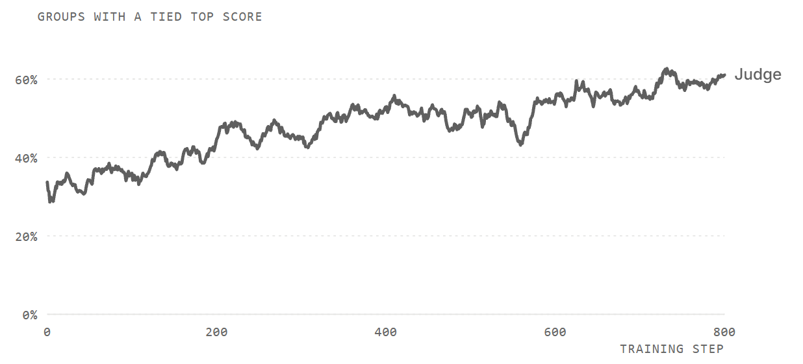
- Using LLM-as-a-Verifier as the RL reward signal (instead of standard judges) yields an 8% higher held-out score.

Databricks — Document processing
- On OfficeQA V2, LLM-as-a-Verifier improves pass@1 from 36% → 49%, recovering 70% of the oracle headroom.


Stanford Law School — Legal agents
- Built a verifier-native harness with the Regulation, Evaluation, and Governance Lab (RegLab) at Stanford Law School.
- On the Harvey Lab legal benchmark: +15% pass rate over the Artificial Analysis harness, across models.
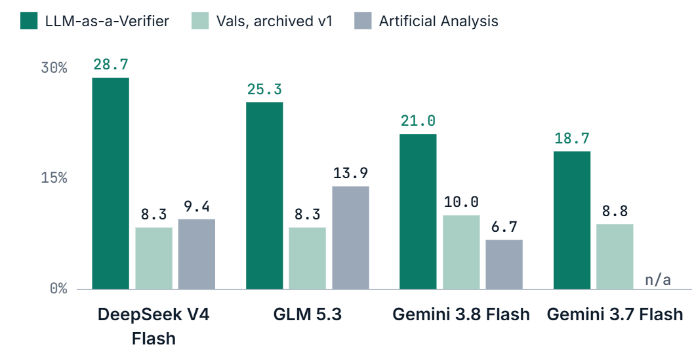
Lambda & NVIDIA — Autonomous driving
- With scaled self-verification, NVIDIA’s Alpamayo Edge (2B) outperforms the Alpamayo Super (34B) AV model.
- Closed-loop simulation on a Mercedes-Benz:
- Success rate: 64.3% → 81.3%
- Collision rate: 11% → 4.5%
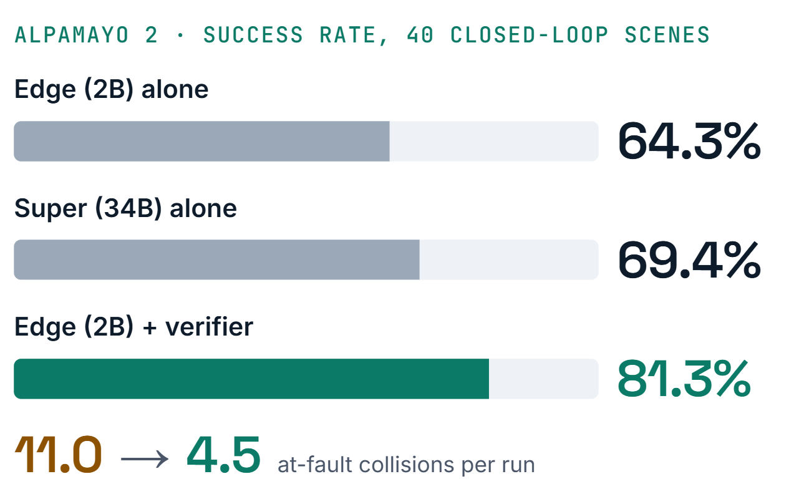
Edge vs. Edge + Verifier
Alpamayo Edge alone crashes into the car in front of it.
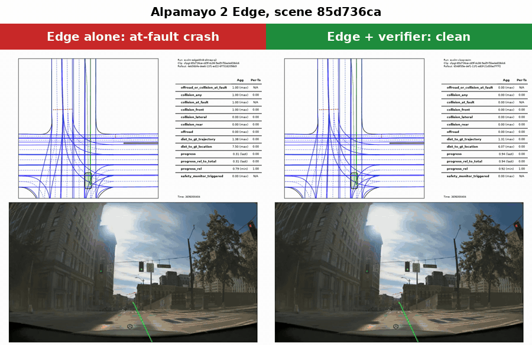
Google Research — Spatial reasoning
- Task: answer questions grounded in Google Maps, spatial, and geographic data.
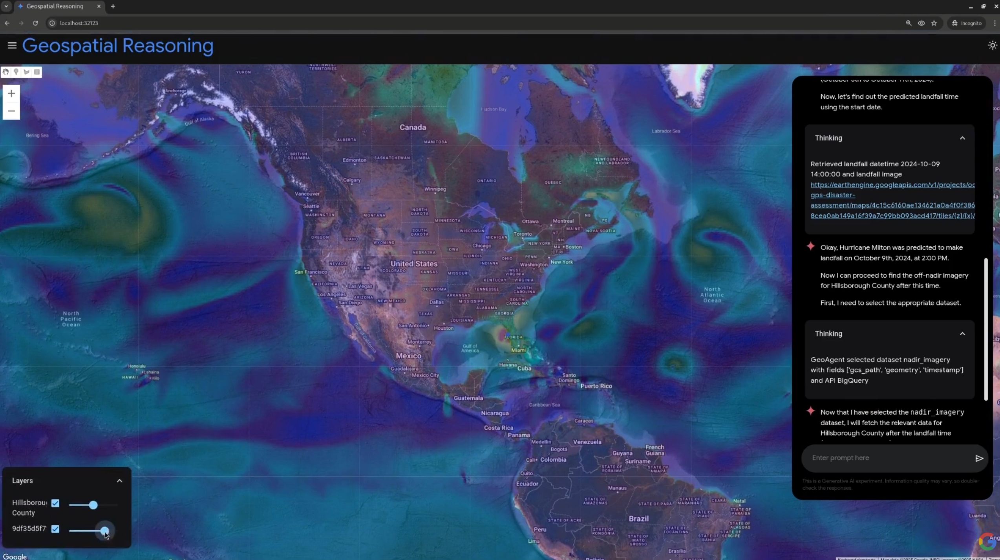
- On GeoExpertQueries (built on Google Maps), LLM-as-a-Verifier raises the success rate of Gemini 3.8 Flash from 63% → 76% (+13).

RoboVerify — New paper with Azalia, Marco & Yejin
- Similar in spirit to our earlier RoboMonkey work, but now verifying action proposals from LLMs directly.
- Scaling self-verification with DeepSeek-V4.1-Flash improves success from 25.0% → 50.5%, close to GPT-6 Astra (55.3%) at 10.3× lower cost.

Genentech — Drug discovery
- Genentech’s agentic drug discovery AI team reached out to us.
- Validation in this domain is very expensive: animal studies, human experiments, and the FDA process.
- They already use verifier-style rubrics in many of their AI-for-science projects.
- They are willing to share internal data so we can validate LLM-as-a-Verifier later.
- They are also interested in how robotics + verification could accelerate wet-lab experiments.
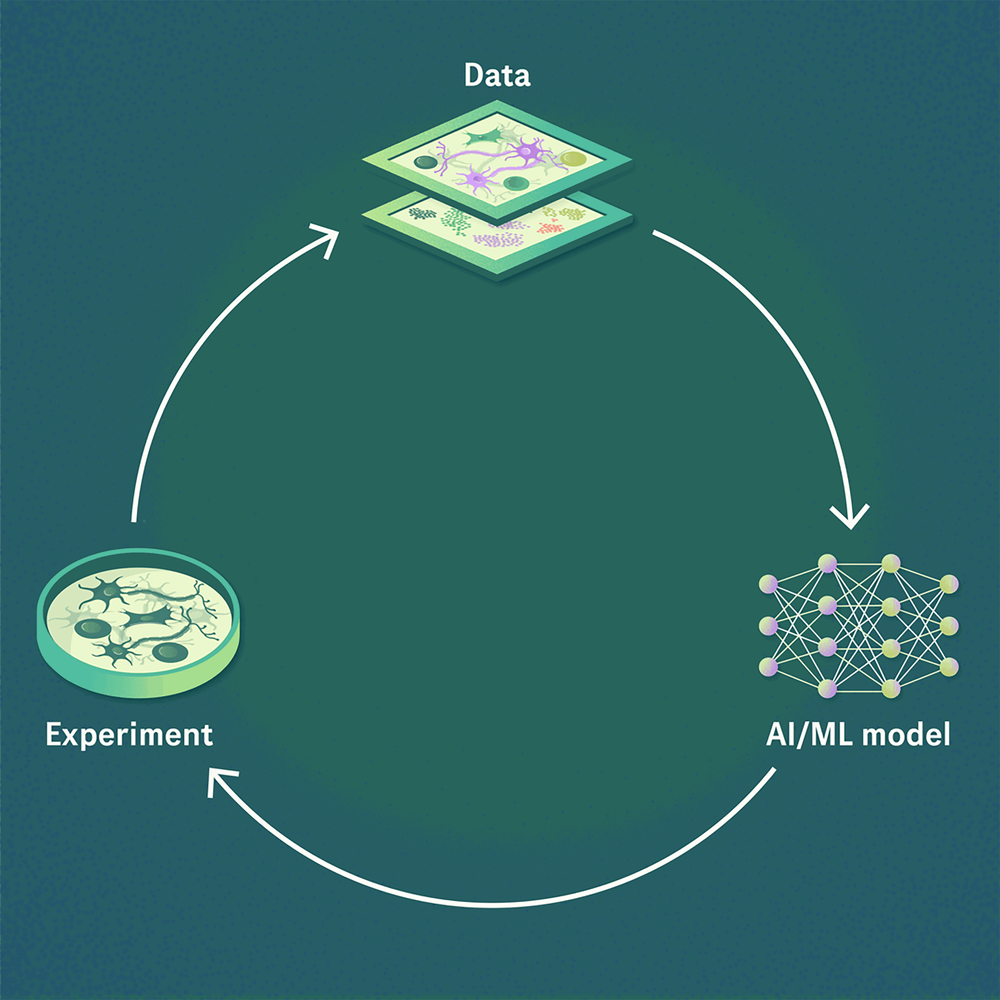

5. Collaborator Interviews
One structured interview per collaborator.
Part A — Adoption experience
- What did you use to check agent outputs before?
- What changed after adopting the verifier, and how do you know?
- What broke?
- What would make you stop using it?
- What did it cost to set up?
Part B — Cost / accuracy / latency trade-offs
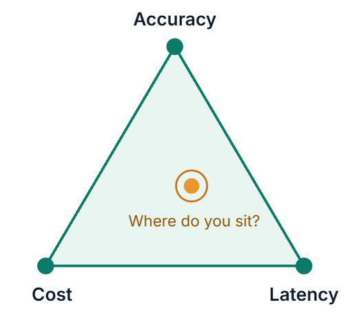
| Dimension | Question |
|---|---|
| Cost | What do you spend on verification per task today, and what is the most you would pay? |
| Accuracy | What error rate can this workflow tolerate, and what does one wrongly accepted output cost? |
| Accuracy | Which is worse for you: a false accept or a false reject? |
| Latency | How long can the verifier take: milliseconds, seconds, minutes, or overnight? |
| Trade-off | If one had to give, which goes first: cost, accuracy, or latency? |
| Trade-off | What extra cost or delay would you accept to halve false accepts? |
6. What Ships with the OpenVerify Community
- Open verifiers: LLM-as-a-Verifier, pre-trained CLMs, a fine-tuning recipe with contrastive learning, and expert rubrics for each domain.
- VerifyBench: per-domain sets of (task, candidate, ground-truth outcome).
- A unified reporting standard: the verifier card, so results are comparable across domains.
- Case studies: every collaboration reported under one schema.
- A workshop at ICML / NeurIPS? Venue and timing TBD.
Question for discussion: Is there anything else we can do to build a stronger community?
7. Verification Compute and Chip Design
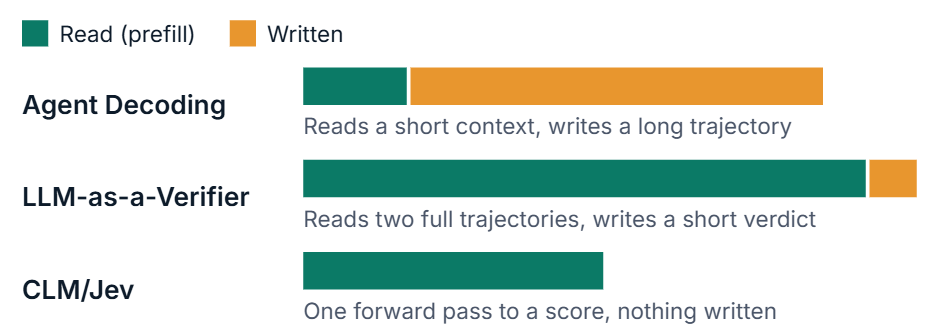
- Open question: Is inference compute shifting toward prefill as verifiers multiply the number of reads?
- SemiAnalysis has reached out and is interested in writing a blog post on verifier compute.
8. Next Steps (This Month)
- Settle the thesis and the reporting standard
- Send the schema to partner companies
- Draft the survey